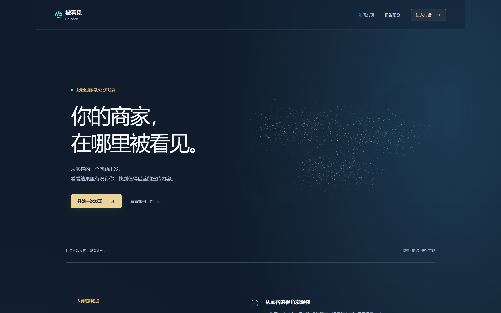
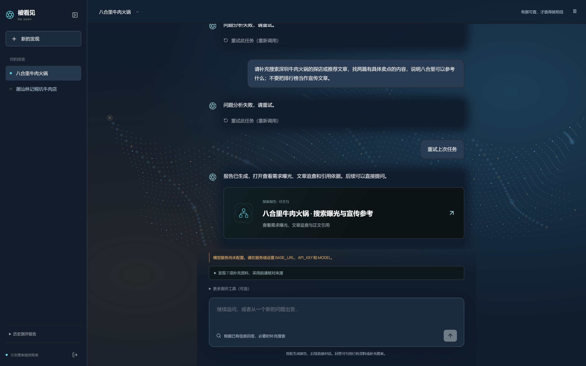
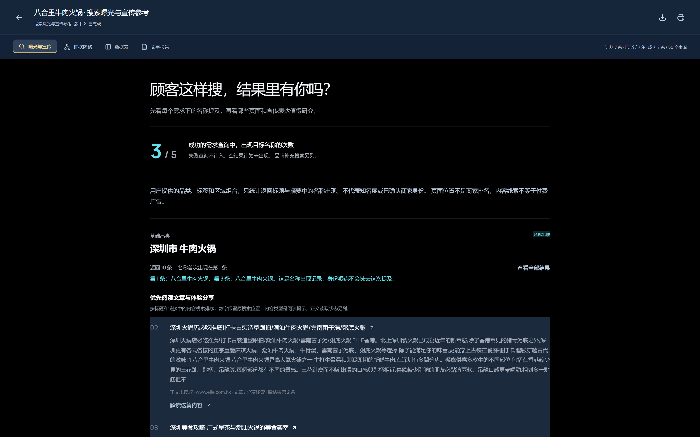
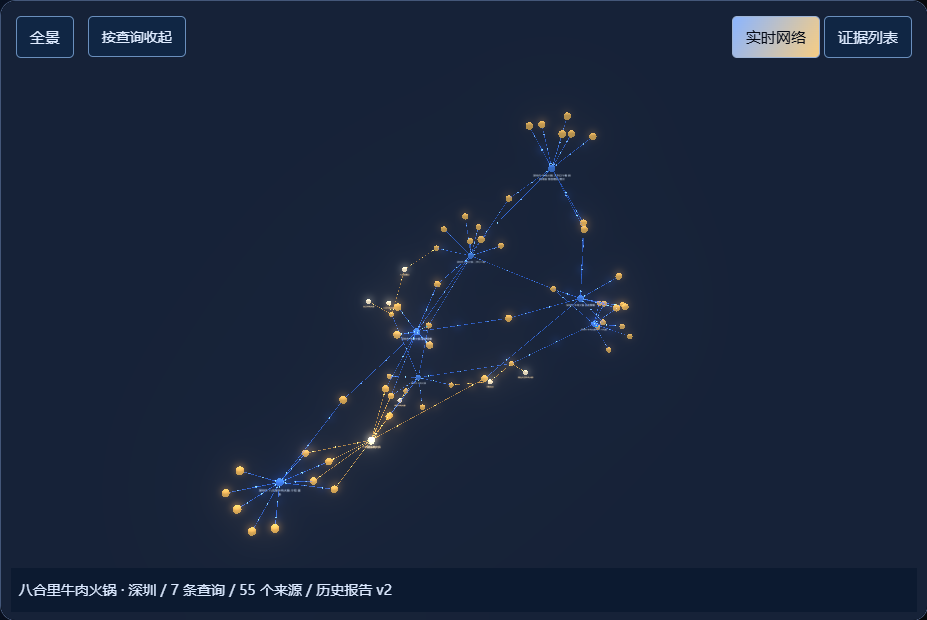
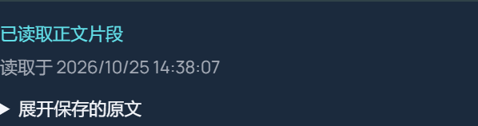

让商家看见
自己如何被看见
从顾客需求出发，连接搜索摘要、原站正文与可追问的证据网络。
商家知道流量变了
却不知道原因在哪
搜索、内容和 AI 推荐共同影响顾客判断。商家真正缺少的，是能回到原始来源的观察工具。
顾客问题分散，难以形成稳定的查询集合
“出现过”与“被推荐”经常被混为一谈
建议离开原文证据，复测时无法判断变化
把每一次“被发现”，拆成可以验证的查询、来源与原文。
认识商家
用城市、品类和真实服务建立上下文，资料由商家确认。
顾客需求检索
最多 5 条不含品牌名的需求查询，品牌资料另行补充。
来源阅读
沿信息缺口补查文章，每轮最多读取 3 个来源，分别保存摘要与正文。
证据追问
按查询展开网络，沿原文继续提问，再用原查询检验内容变化。
一次发现
连接真实线索
蓝金粒子随交互聚合，入口聚焦一个具体问题：顾客搜索时，结果里有没有你。
从公开首页进入对话，继续查看需求曝光、文章追查与正文引用。

对话中发起
也能恢复历史探索
名称、城市与品类建立最小上下文。报告和后续追问保存在同一个观察空间。
资料由用户确认
搜索补充信息经用户采纳后，才进入后续档案。
历史记录可恢复
保留查询、回答与报告版本，重试和失败状态也有记录。


先看需求曝光
再追查宣传表达
八合里历史报告按查询保留名称提及、首次位置、搜索摘要与文章线索。
历史报告 v2：5 条需求、1 条品牌补充、1 条文章追查。补充查询单列，正文不会反向改变摘要曝光。
八合里 · 深圳
沿查询展开证据
同一来源合并展示，保留各次查询的位置、摘要与引用。点击查询或节点继续查看。
直接读取更新项目的历史快照与后端图结构。70 个节点、88 条关系；支持全景和按查询展开。
保存历史案例 JSON ↗

原文读到了什么
状态和时间都可查
每轮最多读取 3 个来源，保留成功、失败、截断状态与内容哈希。引用必须出现在保存的片段里。
正文中的名称不计入摘要曝光。下一轮追问可继续使用已保存证据，普通追问不会修改旧报告。
每个结论
都经过四道约束
检索先完成，内容分析随后进行。无法支持的内容不作为事实展示。
查询口径分开
顾客需求、品牌资料与文章追查分别统计。
摘要与正文分开
正文保存读取状态、时间、哈希与截断标记。
引用与回答核验
原文逐字支持引用，独立模型继续审核回答。
失败仍然可见
计划、尝试与成功分别呈现，未完成不算未曝光。
浏览器关闭，任务仍然继续
React 前端
公开落地页、对话空间、报告和三维证据网络。
Vite · Three.js · 3d-force-graph · EChartsFastAPI
会话、幂等提交、历史报告、合并图谱与 JSON 导出。
12 小时会话令牌检索与来源阅读
搜索、正文读取和模型核验分步执行，独立记录预算与检查点。
每轮最多读 3 个 URL · 重启续跑SQLite 证据快照
保存摘要、正文状态、哈希、提示词与模型输入输出。
同一 URL 去重，原始位置保留项后端自动化测试通过
本次运行更新版测试，覆盖正文引用、读取预算、URL 边界、图谱去重与任务恢复。
八合里历史查询全部成功
5 条需求、1 条品牌资料、1 条文章追查。历史任务记录为已完成。
已有历史证据
继续验证质量
- 已完成：历史回放和页面截图本次读取副本，保留原数据库
- 待完善：三类真实商家对照信息丰富、内容稀疏、同名混淆
- 待复验：原站读取质量与部署本次未重新调用外部搜索或模型
一次试点
回答三个问题
在哪里出现
冻结查询集合，记录每条需求下的名称提及与来源。
内容如何表达
提取公开摘要中的卖点、内容形式和行动引导。
调整后是否变化
保留原查询，在公开内容更新后重新测量并对照证据。
一个品类，三种商家画像
完整操作录屏
从建档到来源打开
查询与证据 JSON
可审计、可归档、可复测
内容机会清单
每条建议带来源和复测方法
失败与误判记录
作为下一轮产品改进输入
让每一次发现
都有来处
搜索公开线索，连接可核验证据，找到下一次内容行动。